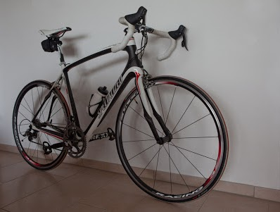
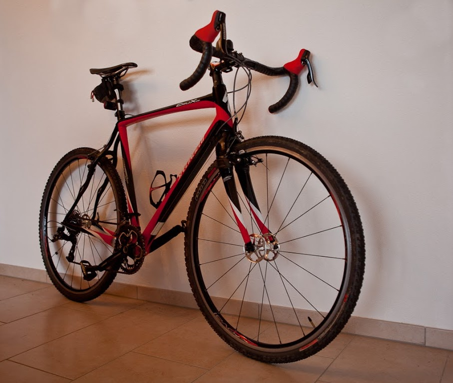
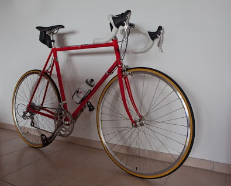

In the past I've been cycling, running and swimming. When I lived in Australia, I've even managed to do some half marathons as well as some triathlons (Olympic distance, i.e. 1.5 km Swim, 40 km Cycling, 10 km Running). Since my return to Europe, this has become much more difficult. More recently, however, I've picked up sports again.
At the moment I focus on cycling (spinning, road racing and cyclocross), but I also still continue with running and swimming. I keep track of my sport activities on my Garmin profile.
I own four bikes:
(1) A Roubaix road racer from Specialized, with an SRAM Force group set and Fulcrum Racing 3 wheels.
This bike is my "work horse", in the sense that I do most of my road cycling on this bike.
(2) A Crux Expert Carbon cyclocross from Specialized, with an SRAM Apex groupset.
I use this bike mainly to ride among the vineyards close to my house.
(3) A vintage (early 1990's) Sirrus road racer from Specialized, with a Campagnolo Athena (silver) group set and Mavic Open Pro wheels.
I use this bike only for fun rides. The frame is from the mid of the 1980's, while the bike has been finished with modern components with a retro look.